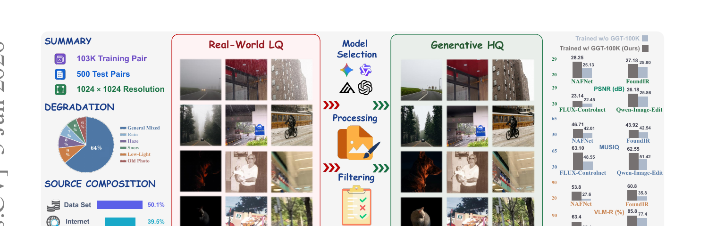
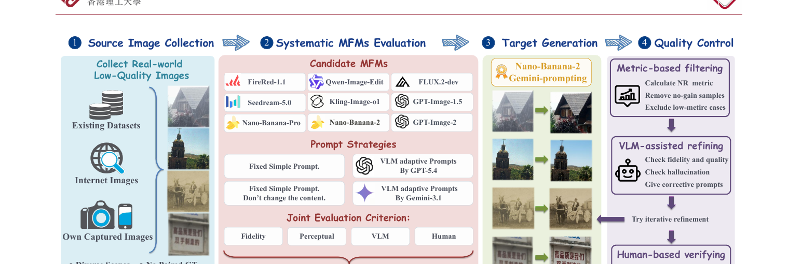
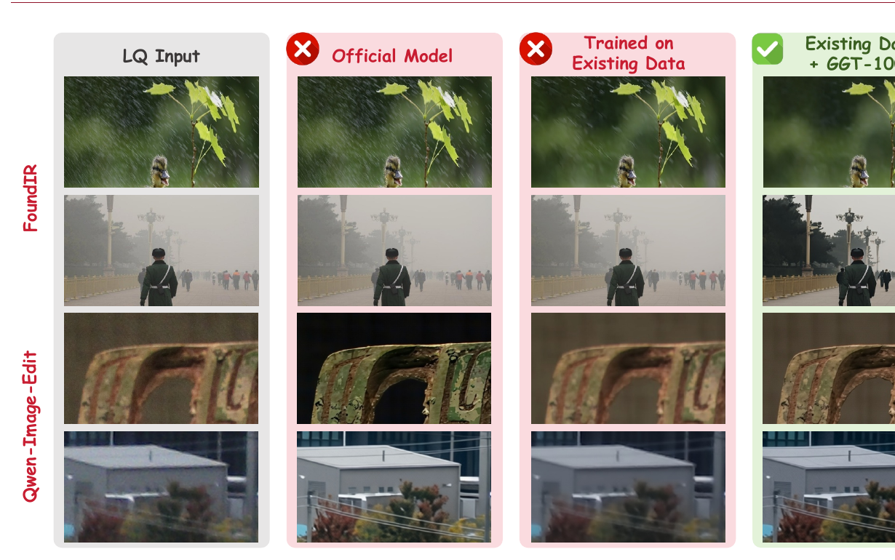

GGT-100K: Generative Ground Truth for Generalizable Real-World Image Restoration

1. 出发点 (Motivation)
真实世界图像修复（real-world image restoration, IR）的目标是把现实里被「复杂、混合、未知」退化糟蹋过的照片复原。和经典 IR（只处理单一已知退化，如去噪/去模糊/超分）不同，真实场景里一张照片往往同时叠加了噪声、模糊、压缩、雨雾、低光……
挡在所有真实 IR 模型面前的不是网络结构，而是没有成对训练数据。现有两条造数据的路都走不通：
- 合成退化：拿干净图 + 手工退化模型造 LQ，能无限量产，但模拟的退化和真实成像过程差距很大（domain gap），训出来的模型一到真实照片就露馅。
- 真实采集：用多次拍摄/受控成像采真实成对图，监督信号是真的，但贵、难扩展、场景单一——雨、雾这种瞬态条件下根本拍不到对齐的「同场景干净参考图」。
核心矛盾是：真实 LQ 图很容易拿到（满世界都是烂照片），但它对应的「干净参考图」（ground truth）根本不存在——那个干净场景在拍摄的瞬间就已经不可复现了。
GGT-100K 的破题点很直接：既然真实 GT 拿不到，那就用生成式多模态大模型（MFM）「生成」一张当 GT。现代 MFM（Nano-Banana-2、GPT-Image-2、Qwen-Image-Edit 等）能吃「图 + 指令」吐出想要的图，理论上可以给一张真实 LQ「画」出它的高质量版本，当作监督用的 Generative Ground Truth（GGT）。
但这事不 trivial：MFM 会扭曲结构、幻觉细节、对提示极度敏感、跨图行为不稳。论文要回答的关键问题是——MFM 生成的目标图，保真度和稳定性够不够格当真实 IR 的监督信号？ 答案是：选对模型 + 选对提示 + 加上严格质控，就够格。
2. 方法 (Method)
这是一篇数据集论文，"方法"是一条数据构造流水线，而非一个网络。只有一个正式公式（MFM 评测打分），核心价值在流程设计。

2.1 第一步：收集真实 LQ 源图
故意挑「没有 GT 参考、且现有成对数据集没覆盖」的退化图，以扩展泛化边界。三个来源：已有的无参考修复数据集 + 含恶劣天气的视觉数据集；带版权许可的网络爬取；自己用不同相机/手机采的（涵盖模糊、噪声、低光）。全部归一化到 1024×1024，涵盖通用混合、雨、雾、雪、低光、老照片六类。论文特别强调：这些类别不是孤立的单退化——雨天图同时还带模糊、噪声、压缩等真实摄影中常见的耦合退化。
2.2 第二步：系统评测 9 个 MFM（核心实证）
模型和提示是耦合的，必须联合评测。候选 = 3 个开源（FireRed-1.1、Qwen-Image-Edit-2511、FLUX.2-dev）+ 6 个闭源（Kling-Image-O1、Seedream-5.0、GPT-Image-1.5、GPT-Image-2、Nano-Banana-Pro、Nano-Banana-2）。提示策略 4 种：固定提示、固定提示+"别改内容"（Fix-NC）、GPT-5.4 自适应提示、Gemini-3.1 自适应提示（自适应 = 先让 VLM 分析图的内容和退化，再生成针对性指令）。
评测四个互补维度，并用 min-max 归一化后取平均得到总分：
—— 翻译：第 $i$ 个「模型-提示」组合在第 $j$ 个指标上的原始分 $m_{i,j}$，先按该指标的全局最大最小值拉到 [0,1]（消除不同指标量纲差异），得到 $\tilde{m}_{i,j}$；再在每个维度内（保真 fid / 感知 per / VLM）把归一化分求平均得维度分 $s_i^a$；最后三个维度分再平均得总分。第四维「人工偏好」单独做用户研究统计，不进这个公式。
- 保真度（fidelity）：拿 100 张 DIV2K 用 Real-ESRGAN 退化，让 MFM 复原，再和原图比 PSNR/SSIM/LPIPS/DISTS（有参考指标）。低光、去雾任务被排除，因为它们合理的输出会改全局亮度，会污染有参考评测。
- 感知质量（perceptual）：200 张真实 LQ（雨/雾/雪/低光/老照片各 20 + 通用混合 100），用 5 个无参考指标（NIQE/MUSIQ/MANIQA/TOPIQ/AFINE-NR）。
- VLM 评估（VLM-R）：IQA 指标抓不住「幻觉物体、不合理编辑」这类问题，于是用 VLM 估计「修复成功率」VLM-R。
- 人工偏好（Human）：用户研究，9 个 MFM 各取最佳提示，盲选最优。
结论：Nano-Banana-2 + Gemini 自适应提示最均衡——Avg. 0.84（最高）、人工偏好 32.5%（最高）。它不在每个单项夺冠，但四个维度都强且稳。对比之下：Qwen-Image-Edit/Kling 保真高但感知保守；GPT-Image 系列/FireRed 感知好但保真差、爱改内容。同一个模型换提示差别巨大：Nano-Banana-2 从固定提示 0.76 → Gemini 自适应 0.84。
2.3 第三、四步：批量生成 + 三级质控
用选定的 Nano-Banana-2 + Gemini 提示批量生成候选 GT，再过三道质控（这是数据可靠性的关键）：
- 指标过滤（Metric-based Filtering）：对每对 LQ 和生成 HQ 比无参考指标，几乎没提升甚至变差的直接判失败剔除。
- VLM 复检改写（VLM-assisted Refinement）：VLM 从五个维度审查——修复质量、物体一致性、几何对齐、内容合理性、色彩一致性。不满意的不直接丢，而是用 VLM 反馈拼接纠正指令重新生成，再复评。VLM 在这里既当质检员又当反馈源，形成迭代闭环。
- 人工验收（Manual Verification）：人工复核保留样本，剔除仍有明显瑕疵/结构不一致/不合理改动的。500 张测试对由多名研究者联合人工精选，确保高保真、强修复、无明显幻觉。
2.4 下游怎么用：以 FLUX-ControlNet 为例
数据集本身是「LQ-HQ-prompt」三元组的 jsonl。每条记录把 LQ 当输入、HQ（即 GGT）当监督目标、prompt 是文本条件：
repo/test_GGT_500.jsonl:L1 — GGT-100K 测试集的一条记录（数据格式）
{"type": "GeneralMix", "gt": "/GGT_dataset/test/GeneralMix/gt/00001.png",
"lq": "/GGT_dataset/test/GeneralMix/lq/00001.png",
"prompt": "Restore this image to a clean and clear state. The image may be degraded by noise, blurring, compression artifacts, or combinations of these."}
训生成式修复模型时，GT 经 VAE 当扩散目标，LQ 经 VAE 当 ControlNet 条件，用 flow-matching（rectified flow）目标训练：
repo/flux-controlnet/train_controlnet_flux_ir.py:L984-L1021 — flow-matching 加噪 + ControlNet 注入 + 速度回归损失
# GT → 目标 latent；LQ → control_image（前面已各自 VAE 编码并 pack）
noise = torch.randn_like(pixel_latents)
sigmas = get_sigmas(timesteps, n_dim=pixel_latents.ndim, dtype=pixel_latents.dtype)
noisy_model_input = (1.0 - sigmas) * pixel_latents + sigmas * noise # rectified flow 直线插值
controlnet_block_samples, controlnet_single_block_samples = flux_controlnet(
hidden_states=noisy_model_input,
controlnet_cond=control_image, # ← LQ 作为 ControlNet 条件注入
timestep=timesteps / 1000, guidance=guidance_vec,
pooled_projections=pooled_prompt_embeds, encoder_hidden_states=prompt_embeds,
txt_ids=text_ids[0], img_ids=latent_image_ids, return_dict=False,
)
noise_pred = flux_transformer(
hidden_states=noisy_model_input, timestep=timesteps / 1000, guidance=guidance_vec,
pooled_projections=pooled_prompt_embeds, encoder_hidden_states=prompt_embeds,
controlnet_block_samples=[s.to(dtype=weight_dtype) for s in controlnet_block_samples] ...,
txt_ids=text_ids[0], img_ids=latent_image_ids, return_dict=False)[0]
loss = F.mse_loss(noise_pred.float(), (noise - pixel_latents).float(), reduction="mean") # 速度场目标
这里 loss = MSE(noise_pred, noise - pixel_latents) 正是 rectified flow 的速度回归（速度 = 终点噪声 − 起点数据），和 oftsr-2024 里的 flow 目标同源——只是这里把 LQ 作为 ControlNet 空间条件，GGT 作为要拟合的干净终点。
IR 任务没有现成文本描述，他们用 RAM（Recognize Anything）给 GT 打标签当 prompt：
repo/flux-controlnet/train_controlnet_flux_ir.py:L966-L971 — 用 RAM 给 GT 抽标签作为文本条件
with torch.no_grad():
gt_for_ram = ram_transforms((pixel_values.float() * 0.5 + 0.5).clamp(0, 1))
captions = inference_ram(gt_for_ram.to(device=accelerator.device, dtype=torch.float16), ram_model)
prompt_embeds, pooled_prompt_embeds, text_ids = compute_embeddings_from_prompts(captions)
3. 结论 (Key findings)

- Nano-Banana-2 + Gemini 自适应提示是最佳生成设置（Tab. 1）：Avg. 0.84、人工偏好 32.5%，四维均衡。提示策略影响巨大，闭源模型整体优于开源。
- 用 GGT-100K 训练，几乎所有 IR 模型在自建测试集上全面涨点（Tab. 2）：
- 判别式模型 PSNR 大幅提升——NAFNet +3.12 dB、X-Restormer +3.54 dB、PromptIR +3.60 dB、MoCE-IR +3.35 dB。
- 生成式模型增益最猛（感知 + VLM-R）：FLUX-ControlNet 的 MUSIQ +14.55、TOPIQ +0.12、VLM-R +38%；Qwen-Image-Edit MUSIQ +11.13、VLM-R +10.2%。
- 注意一个权衡：判别式模型 PSNR/SSIM 涨但 MANIQA 等部分无参考指标略降；生成式模型则是保真和感知同时涨——说明 GGT 的「生成式干净目标」更契合生成式修复模型的先验。
- 在 6 个公开 RealLQ 无 GT 测试集上同样泛化（Tab. 3，社媒/老照片/雨/雾/雪/低光）：用 GGT-100K 后 VLM-R 普遍 +7~11%，证明增益不是只在自家测试集上过拟合。
- 训练后甚至超过官方模型：FoundIR、FLUX-ControlNet、Qwen-Image-Edit 用 GGT-100K 微调后，VLM-R 高于各自官方发布版本（如 FoundIR 60.8% vs 官方 28.8%）。
4. 实现细节 (Implementation notes)
- ⚠️ 数据生成代码（Nano-Banana-2 / Gemini API 调用、提示模板、VLM 复检逻辑）没有开源。
grep全仓没有任何 nano-banana/gemini/genai 的 API 调用代码——发布的是最终数据集 + 消费它的 baseline 训练代码（X-Restormer、FoundIR、MoCE-IR、DA-CLIP、FLUX-ControlNet、Qwen-Image-Edit 各一套），而非生成管线本身。想复现「造数据」这一步只能照论文 + 附录的提示设计自己搭。这是用闭源 API 造数据的固有代价。 - 数据格式极简：jsonl 每行
{gt, lq, prompt}（测试集多一个type标退化类别）。prompt在训练集里其实是固定模板（"Restore this image to a clean and clear state..."），见repo/train_existing_GGT.jsonl:L1——也就是说，自适应提示只用在生成 GT 阶段，下游训练用的是固定 prompt 或 RAM 标签，两者不要混淆。 - 下游训练用 flow-matching 而非 DDPM：
noisy = (1-σ)·latent + σ·noise、loss = MSE(pred, noise - latent)，是 rectified-flow 速度目标（train_controlnet_flux_ir.py:L984,L1021）。 - IR 没文本标注 → 借 RAM 打标签当 prompt（
train_controlnet_flux_ir.py:L224,L966）。仓库把 Recognize-Anything 代码直接 bundle 进flux-controlnet/ram/，靠ram_bootstrap.py把它塞进sys.path——一个工程上的小 trick，避免额外 pip 依赖。 - Qwen-Image-Edit 用 LoRA 微调（rank=8, alpha=8, 只调 attention 的 to_q/k/v/out），
spatial_alignment: hybrid_512（384² 条件 + VAE 在 512），lr 5e-4（qwen-image-edit/train_lora_qwen2511_restoration.yml）。即生成式大模型不是全参微调，是轻量适配。 - 列名可配但默认
gt/lq/prompt：--image_column gt --conditioning_image_column lq --caption_column prompt（train_controlnet_flux_ir.py:L413-L415），即 GT 是要拟合的目标、LQ 是 ControlNet 条件——和论文「GGT 当监督、LQ 当输入」一致，无 paper↔code 矛盾。 - 保真度评测的巧思：用 DIV2K + Real-ESRGAN 合成退化来算有参考保真指标（因为这里恰好有干净 GT），而感知/VLM 评测用真实 LQ（没有 GT）。两套数据各司其职，绕开了「真实图没 GT 没法算 PSNR」的死结。
5. 批判性总结 (Critical assessment)
Strengths
- 问题选得准、思路反直觉但合理：真实 IR 的瓶颈是数据不是模型，而"用生成模型造 GT"把"采集干净参考图"这个物理上不可能的事变成了可执行的生成任务。
- 评测扎实：9 模型 × 4 提示 × 4 维度（保真/感知/VLM/人工）的联合评测，是目前对"MFM 能否当 IR 数据工厂"最系统的实证，本身就是有价值的参考表。
- 质控是真功夫：指标过滤 + VLM 复检改写（带迭代再生成）+ 人工验收三级把关，比 RealRestorer 等"只用固定提示、不查保真"的前作严谨得多。
- 增益可迁移：不只在自家测试集涨，6 个公开 RealLQ 集也涨；对判别式和生成式两类模型都有效，尤其契合生成式修复。
Limitations / open questions
- 「Ground Truth」名不副实——本质是高质量伪标签。GGT 是 Nano-Banana-2 脑补出来的，再严的质控也无法保证像素级真实：模型可能"合理地"补出原场景里根本不存在的纹理。论文用 VLM-R 和人工筛"无明显幻觉"，但"无明显"≠"无"。把它叫 ground truth 在科学严谨性上有争议——它是generative pseudo-GT。
- 天花板被 Nano-Banana-2 锁死：整个数据集的质量上限就是这个闭源 API 的能力上限。API 一旦变更/下线/调价，数据无法复现、无法扩展。这与"scalable paradigm"的卖点有张力——可扩展，但不可控、不可复现。
- 评测指标自身存疑：用 VLM-R(由 MFM/VLM 打分)来评 MFM 生成质量，又用它做质控，存在"裁判与选手同源"的循环——尤其 Nano-Banana 系和 Gemini 都属同一厂商生态。无参考 IQA 指标也已知与人眼有偏差。
- 保真评测用的是合成退化：Tab. 1 的保真分数来自 DIV2K+Real-ESRGAN 合成退化(因为要有 GT)，但论文全篇论点是"合成退化不像真实退化"——那么在合成退化上测出的保真排名,能否外推到真实退化,逻辑上是个缺口。
- 判别式模型的感知指标下降：Tab. 2 里 CNN/Transformer 模型用 GGT 后 MANIQA/TOPIQ 等多项无参考指标反而降,说明"生成式 GT"喂给"L1-loss 判别式模型"会被平均化,增益主要在 PSNR;真正受益的是生成式模型。结论里"a wide range of models"略过度概括。
When to use / not use
- 适合：训练/微调生成式真实修复模型(FLUX-ControlNet、Qwen-Image-Edit 类),想要在真实复杂退化上提升感知质量和泛化;作为现有合成数据的补充扩充真实退化覆盖。
- 不适合：医学/遥感/取证等要求像素级真实、零幻觉的场景——生成式伪 GT 的"脑补"风险不可接受;以及需要完全可复现、不依赖闭源 API 的数据构造流程。
Further reading
- 同组/相关:FoundIR(真实采集路线的代表,本文的主要对照与改进对象)、RealRestorer(早期用 MFM 做修复但只用固定提示)。
- 下游用到的生成式修复:本文把 LQ 当 ControlNet 条件 + flow-matching 训练,速度目标与 oftsr-2024 同源;被微调的 qwen-image-2-2026 是 TI2I 编辑模型。
- 退化合成:Real-ESRGAN(本文保真评测用它造合成退化对)。
- 数据质控里的标签工具:RAM(Recognize Anything,给无标注图打标签当 prompt)。
讨论 / Comments
评论托管在本仓库的 GitHub Discussions, 需 GitHub 账号。